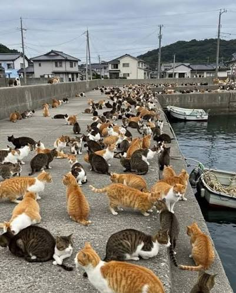
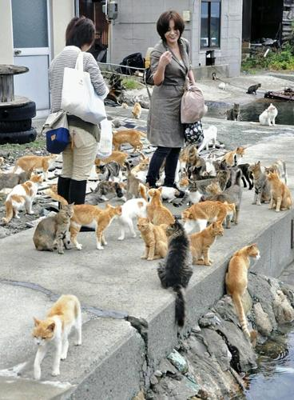
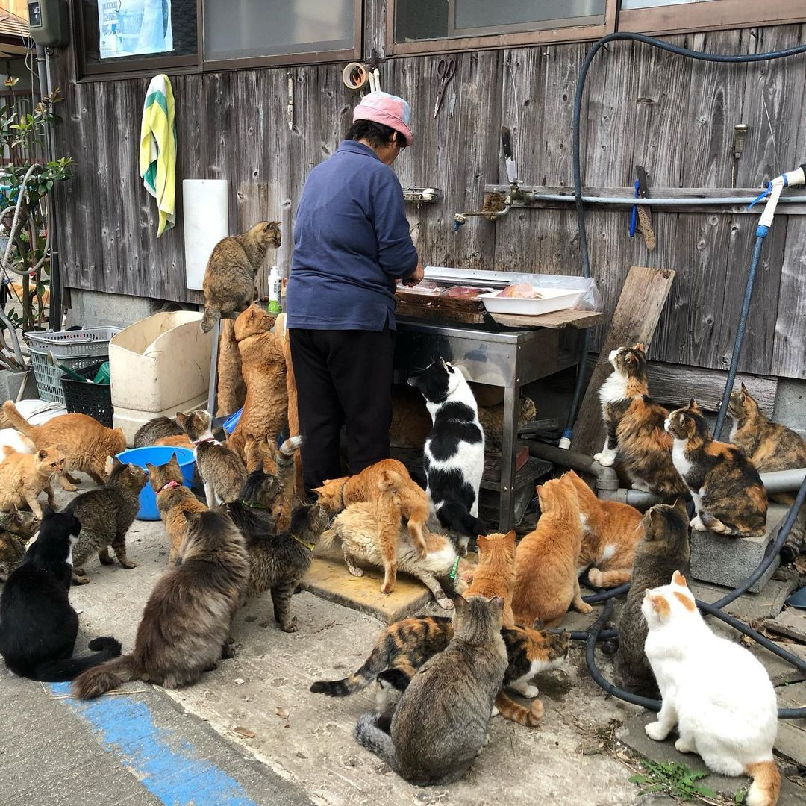
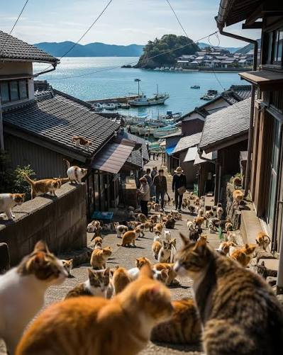
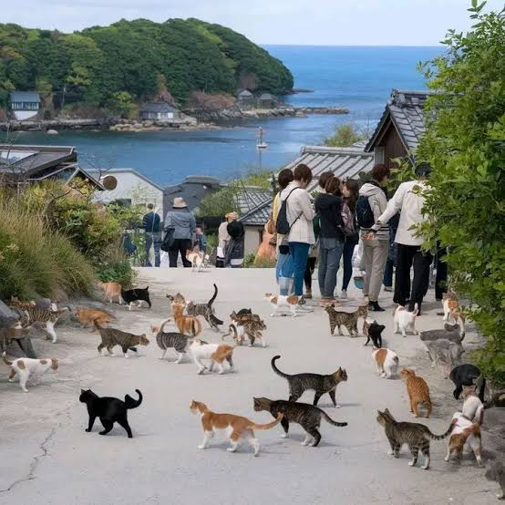
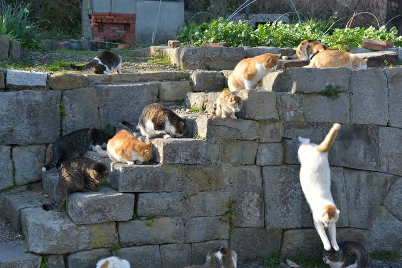
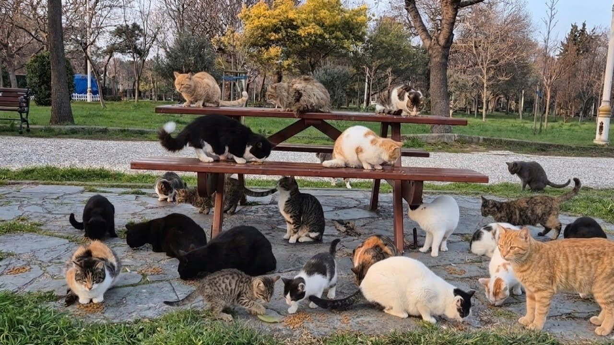
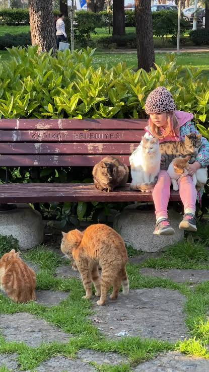
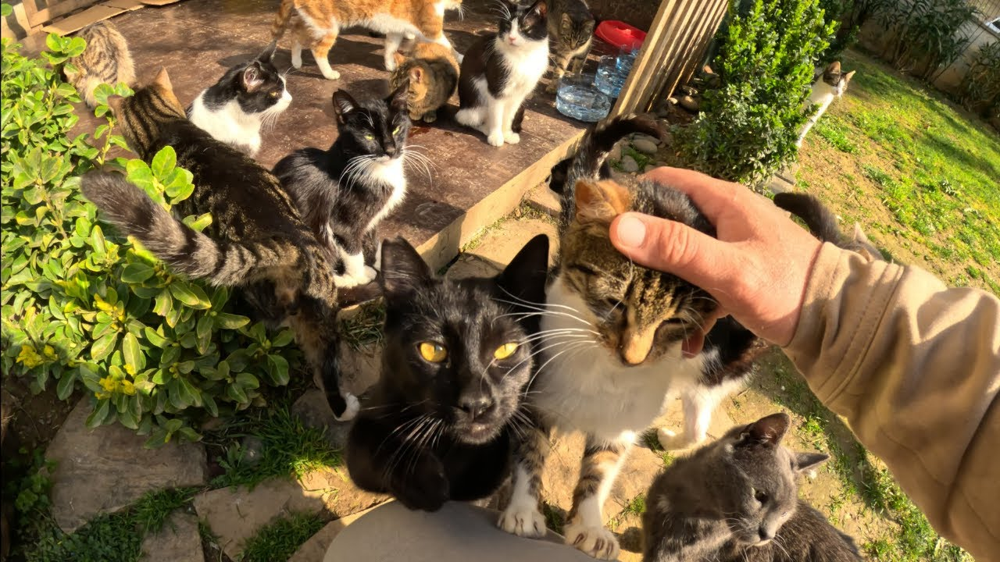

Meowland! the Purrfect cat purradise!
What is MeowLand? It is a group project headed by the famous Catherine Catipaw with the main goal being to create the biggest cat haven on earth!
Every cat lover has heard of the Japanese cat islands and villages or the massive populations of stray cats in Instanbul but these happened naturally and incidentally.
Our goal is to see how far we can push it if we try to do it on purpose. MeowLand functionally serves as a large reserve for cats, a cat safari with large open areas,
picturesque nature exhibits and a cozy village, populated only by the staff taking care of the cats. Imagine Disney land but for cats, a sort of... *Meow land*?
Thanks to generous funding by Miss Catherine MeowLand stretches for just about 4,000 square kilometers, cares for ~800,000 cats (as of 2026) and employs 950 caretakers
including trained veterinarians, volunteers and proffesional cleaners as well as 500 additional personel for clerical tasks and environment managment. We plan to expand
even further with time while making sure the numbers remain managable and safe for our feline friends. We are always recruiting more staff and taking suggestions so by
all means do feel free to contact us anytime! We are waiting for your call!
Our cats are well taken care of, fed with balanced cat food of our own creation, regularly groomed and cleaned as well as given lots of love and attention from both the
caretakers and visiting cat lovers. Our veterinary team is working over time to curb any disease that may otherwise spread and ensures proper neutering and spading
(As much as we would love to increase the number of our cats even further we need to do it at a controlled rate to remain safe).
All this ensures that cat lovers like YOU may visit and enjoy this little piece of feline heaven! Come on down and feel like an egyptian pharaoh for a few hours, our
cats are friendly and very social so wherever you go you're sure to be followed by a cloud of them eager to play! Any of them strike your fancy? Well you can also adopt
them! All profits go to further expansion and cat care so you can feel good about it too! What are you waiting for? MeowLand is waiting for you!
Browse our cats
More cats








